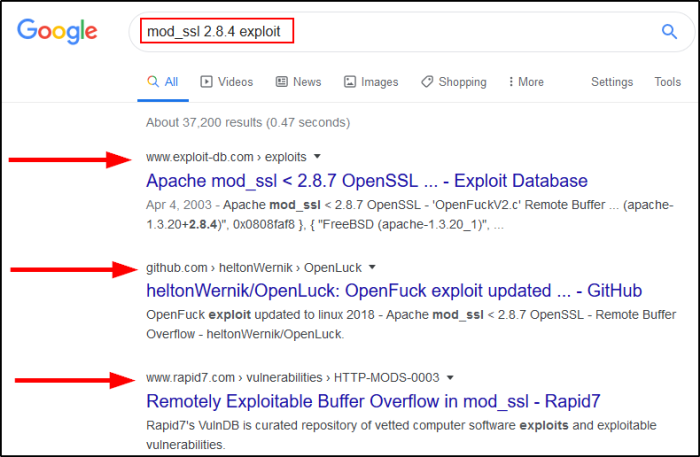
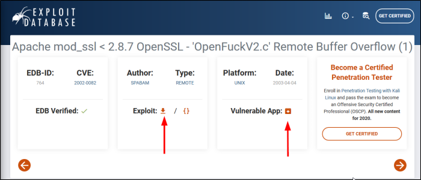
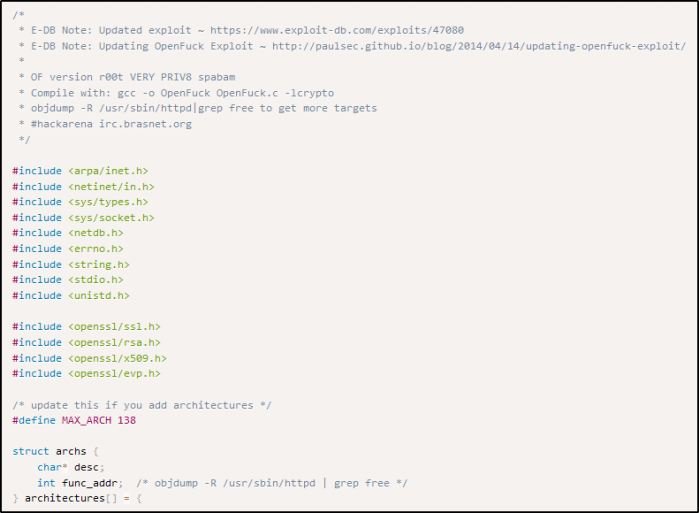
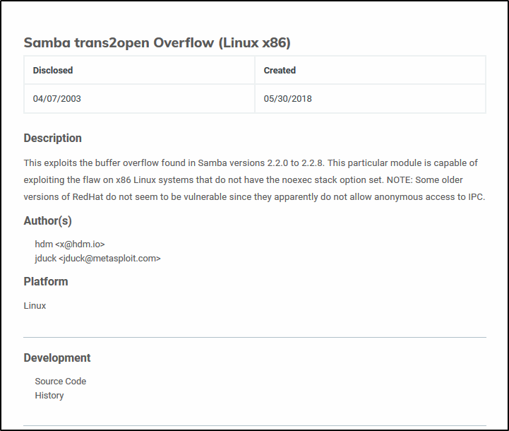
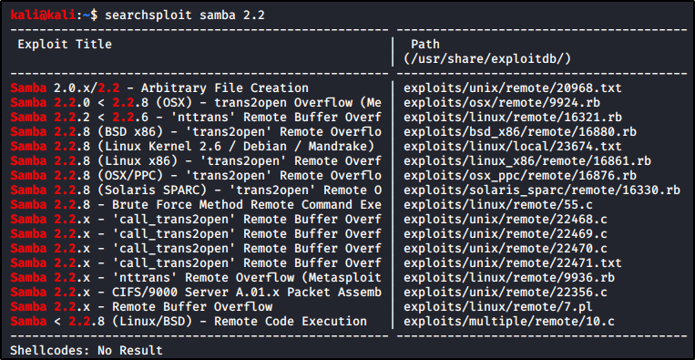

Researching Potential Vulnerabilities
Create a Node for Information Gathering (E.G. save port and services version, ip addresses, hostname..)
and a Sub-Node for Vulnerabilites
Google Search


Exploit-DB
Allow you to download the exploit and even the vulnerable app if you want to test it




Rapid7
Modules included in Metasploit too!




Searchsploit
Searchsploit search for the exact string, so if you have no results, try a more generic one:
Check the path for the right module (example, “remote” stands for remote code execution)

